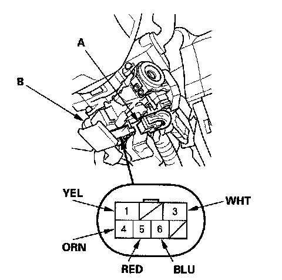
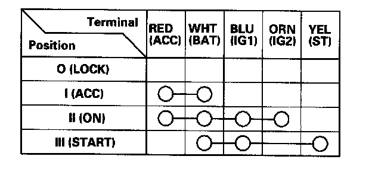

Ignition Switch: Testing and Inspection
Ignition Switch TestSRS components are located in the area. Review the SRS component locations 4-door, 2-door and precautions and procedures before performing repairs or servicing.
1. Make sure you have the anti-theft code for the audio or the navigation system, then write down the audio presets. Make sure the ignition switch is OFF.
2. Disconnect the negative battery cable.
3. Remove the driver's dashboard lower cover, and the steering column covers.

4. Disconnect the 7P connector (A) from the ignition switch (B).

5. Check for continuity between the terminals in each switch position according to the table.
6. If the continuity checks do not agree with the table, replace the ignition switch.
7. After reconnecting the battery, enter the anti-theft code for the audio or the navigation system, then enter the customer's audio presets, and set the clock.